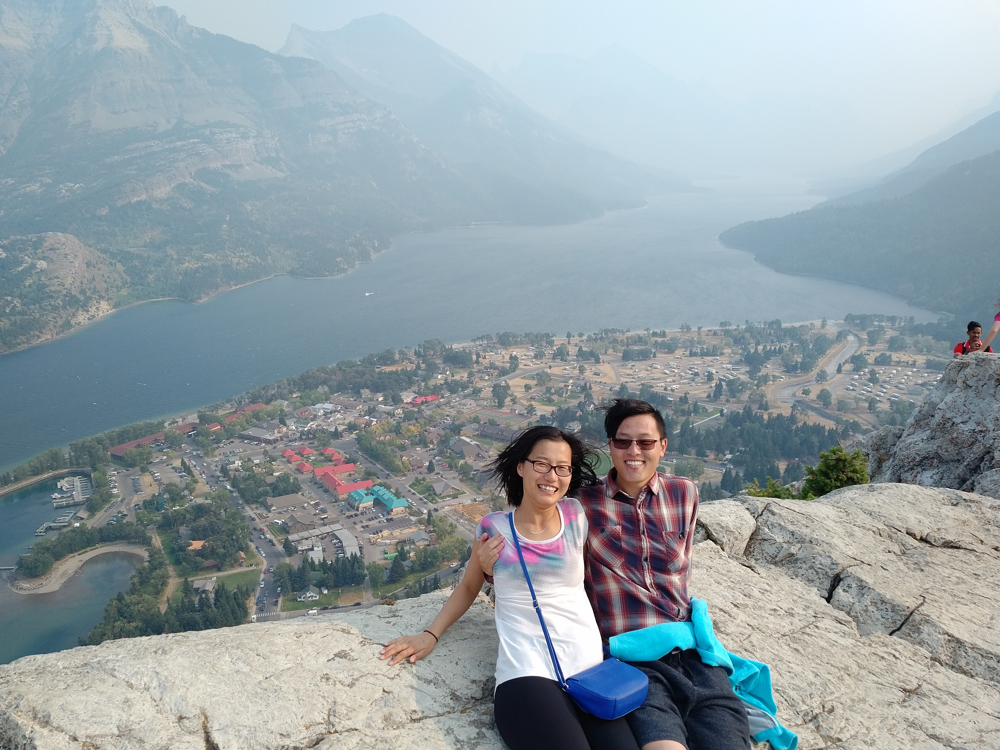

- 2017 -
Start Auto-scroll
Waterton National Park Long Weekend Trip
First time @ Waterton National Park
Read more
Sep 02, 2017
On top of the mountain!
One hour climb.

Read more
Sep 02, 2017
Placeholder
... ... ...
Read more
Sep 02, 2017
 Read more
Sep 02, 2017
Read more
Sep 02, 2017